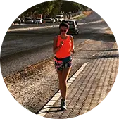

Не знала, що собі купити – звернулася до хлопців з RunSmart – підібрали пульсометр, який підійшов саме під мої цілі та фінансові можливості. Через деякий час вирішила оновити гаджет – не роздумуючи звернулася туди ж.
Нові цілі - новий гаджет!
Спасибі, RunSmart!
Іван Ткачук
1 полумарафон
Крута штука-пульсометр. Зазвичай без них бігав. Виявляється, тільки гірше собі робив. Купив пульсометр, ще подарунок отримав тренування. Зі мною разом провели перше тренування, навчили користуватися новим гаджетом. Також пояснили основи анатомії, склали план тренувань на місяць уперед.
З ними підготувався до свого першого півмарафону! Дякую!!!

Юля Зима
2 напівмарафони
Довго було почати бігати, т.к. раніше кілька разів починала, але ставало важко і я кидала. Від друзів почула про RunSmart і про біг із контролем пульсу і вирішила спробувати.
Подзвонила, хлопці поцікавилися моїми цілями та підібрали дуже цікавий варіант зі знижкою! Тепер бігаю і насолоджуюся бігом! Пробігла вже 2 півмарафони і кілька коротших забігів і не має наміру зупинятися!